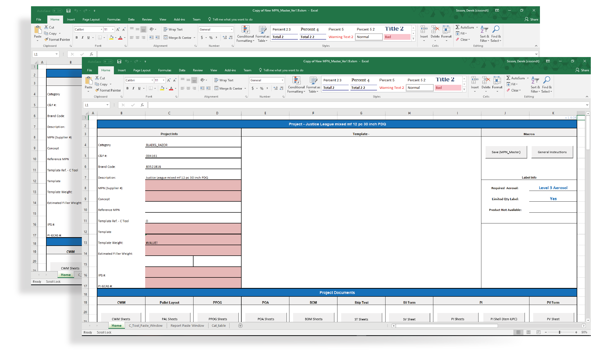

|
 WestRock
WestRock
Design Document Suite

The Design Document Suite or 'DDS' is a document automation and quality assurance application for the Procter & Gamble account at the WestRock Merchandising Displays division.
The Application focuses on uploading Excel documents exported in HTML format with developed UI
for users to link project based customer data to appropriate ‘cells’, eliminating redundant
copy+paste keystrokes and improving quality. (JavaScript/AJAX, PHP, MSSQL.).
|

Ghost Link was a group senior capstone project for the Cybersecurity Program at the University of Cincinnati.
|
frndship |